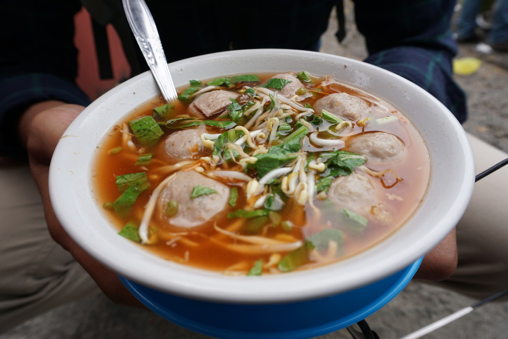

Bakso

Description
Bakso or baso is an Indonesian meatball,
or a meat paste made from beef surimi.
Its texture is similar to the Chinese beef ball, fish ball, or pork ball.
The word bakso may refer to a single meatball
or the complete dish of meatball soup.
Mie bakso refers to bakso served with
yellow noodles and rice vermicelli,
while bakso kuah refers to bakso soup served without noodles.
Ingredients
- 500 gr daging sapi segar
- 4 sdm tepung tapioka
- 1 putih telur
- 6 bawang merah digoreng
- 6 bawang putih digoreng
- 1 sdm baking powder
- optional kaldu bubuk
- lada bubuk
- garam
Steps
- Giling daging pake blender sedikit demi sedikit
- Campur semua bahan ke blender, jgn lupa pake air dingin buat menghaluskannya
- Setelah jadi, buat bulatan dgn menggunakan tangan. Lalu masukkan ke air mendidih. br
Dalam air rebusan kaldu lebih enak dimasukkan sumsum sapi buat kuahnya.
- Done. Selamat mencoba